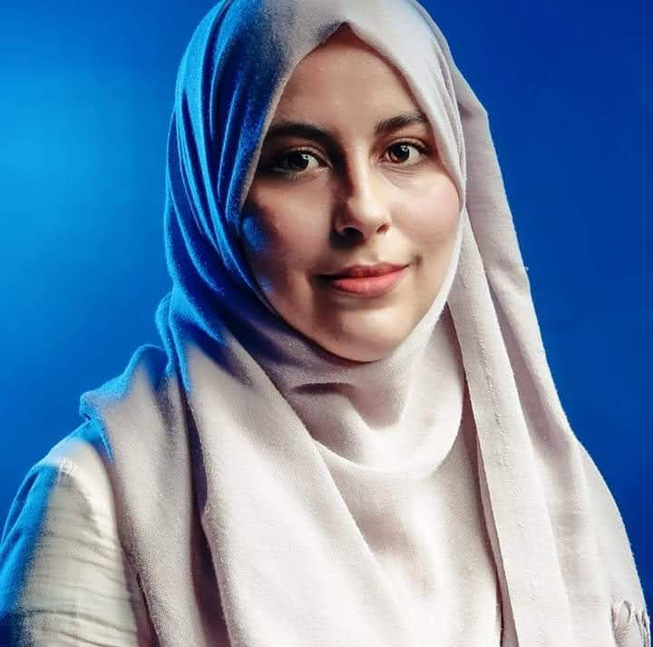

HOME
ABOUT
WORK
SECTION
RESUME
ABOUT ME

Greetings! I am MarIem Hammami, a versatile professional with a passion for visual storytelling, community engagement, and web development. With over 5 years of experience in the realms of graphic design and community management, I bring a unique blend of creativity and strategic thinking to every project.
WORK EXPERIENCE
LIVRE PLUS 2023
EDITORAIL GRAPHIC DESIGNER & COMMUNITY MANAGER
Develop illustrations, logos, and other designs. Ensure the final graphics and layouts are visually appealing and on-brand. Establish creative direction for the company within brand guidelines. Create and design various materials for digital and print.
LEBSA KIDS 2022
GRAPHIC DESIGNER
Establish creative direction for the company within brand guidelines. Develop illustrations, logos, and other designs. Work with a wide range of media and graphic design software. GRAPHIC
OBRICO KMANDY 2021-2022
DESIGNER & WORDPRESS DEVELOPER
Create and design various materials for digital and print. Establish creative direction for the company within brand guidelines. Develop illustrations, logos, and other designs.
GRAPHICO 2020
GRAPHIC DESIGNER
Create and design various materials for digital and print. Manage multiple projects within design specifications and budget restrictions. Develop illustrations, logos, and other designs.
RESUME
Clic here to dowled my resume
Contact
+216 53 833 268
hammamimariem67@gmail.com
Ben Arous